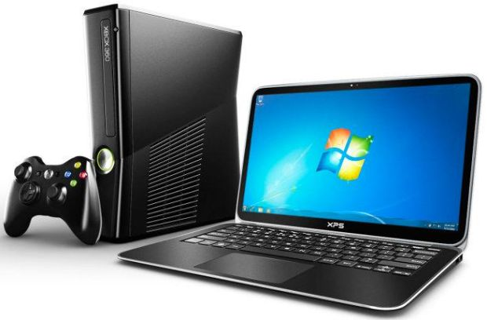
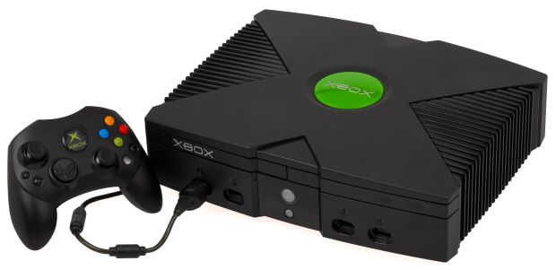
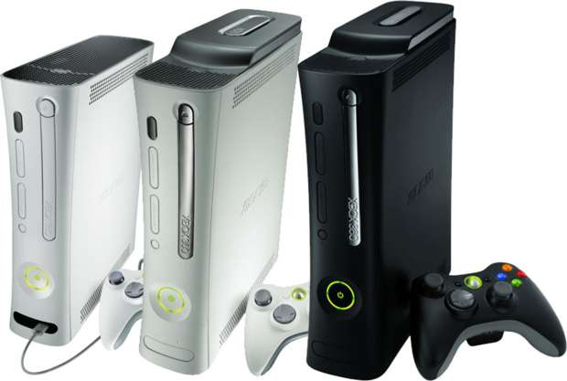
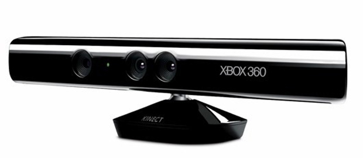

O novo Xbox, chamado também de Xbox 720, tem lançamento previsto para o dia 21 de maio, às 14h. Esta é a terceira versão do console criado pela Microsoft, empresa que tradicionalmente fazia software, para entrar no mercado de jogos eletrônicos. Confira, aqui no TechTudo, a história completa da "máquina X" que marcou uma transformação no mundo dos games.
A história do Xbox começa em 1998, com a equipe de um software chamado DirectX, dentro da Microsoft. Os desenvolvedores da API Kevin Bachus, Seamus Blackley e Ted Hase se reuniram com o líder do DirectX, Otto Berkes, para desenvolver um protótipo de videogame. Era uma época de mudanças dentro da Microsoft, envolvendo grandes executivos e a empresa em si. No mesmo ano, o CEO Bill Gates enfrentava processos por formação de monopólio no mercado de software nos Estados Unidos. Seu Windows havia dominado mais de 90% das vendas de programas para PCs e nenhum concorrente conseguia uma fatia significativa. Mesmo com tamanho sucesso, Gates tomou uma decisão inusitada e deixou o cargo de presidente da Microsoft em agosto de 1998. Em seu lugar, entrou o administrador da empresa Steve Ballmer, que Gates contratou em 1980 e que estudou em Harvard e Stanford. Ballmer, com seu temperamento explosivo e caricato, provocou uma mudança na Microsoft, ao seguir em frente com o projeto Xbox da empresa. Mesmo com essa transformação, de uma corporação especializada em programas de computador para uma fabricante de jogos, Bill Gates continuou no conselho de executivos que comanda uma das mais importantes empresas tecnológicas do mundo. O videogame desenvolvido pelo time da DirectX iria se chamar, inspirado no nome da API DirectX Box. A ideia era de Ed Fries. O nome, no entanto, foi encurtado para Xbox, o que causou o descontentamento da equipe de marketing, que chegou a fazer uma lista de nomes que eles consideravam mais populares. Mesmo com várias sugestões, o nome Xbox pegou e permaneceu até hoje, com fácil aceitação do público.
Lançado na América do Norte no dia 15 de novembro de 2001, o Xbox só chegou no Japão em 22 de fevereiro de 2002 e no resto do mundo em 14 de março de 2002. Foi o primeiro console vendido por uma empresa americana no novo século, após a descontinuação do Jaguar da Atari, em 96. Com 64 MB de RAM e espaço interno entre 8 e 10 GB, o console queria abocanhar o mercado japonês, que estava mais em evidência após anos de domínio da Nintendo e da Sega. A máquina X não foi tão bem sucedida nessa missão, conquistando mais o mercado europeu. O carro-chefe da Microsoft com seu novo console era um jogo exclusivo de tiro chamado Halo, que colocava o jogador na pele do herói espacial Master Chief. O game foi um sucesso e até hoje é comparado com grandes títulos dos anos 90, como Perfect Dark e GondenEye 007, dois jogos feitos pela desenvolvedora Rare. A britânica Rare foi perdendo relevância, foi comprada pela Microsoft e deixou de produzir 007 e Perfect Dark. E a Microsoft Studios, por sua vez, utilizou todo o seu know-how de jogos de computador para transformar a plataforma Xbox em um aparelho ideal para gamers que gostam de First Person Shooters (FPS), os jogos de tiro em primeira pessoa. Xbox também teve dois jogos relevantes de luta: Dead or Alive 3 e o primeiro Soul Calibur. O jogo de lutas com armas era uma continuação do Soul Edge do PlayStation, criado pela Namco. No entanto, ao invés de rodar no PS2, o jogo só foi lançado para Dreamcast e Xbox. E fez sucesso no aparelho da Microsoft. O primeiro joystick do Xbox foi eleito pelo Guinness Book de 2008, o livro dos recordes, como o maior controle de todos os tempos. O editor Craig Harris, do IGN, afirmou que o controle é o segundo pior entre todos os videogames. Com dois analógicos, o componente parece com o controle Dual Shock do PS2, mas é muito mais encorpado. O controle tem seis botões coloridos, um número impressionante frente aos quatro do PSX e do SNES. A Microsoft lançou um controle S exclusivamente no Japão, uma versão mais magra e mais anatômica para os jogadores. Esse modelo sofreu menos críticas, mas não impediu que o Xbox fosse conhecido por seu controle grande. A rede online Xbox Live foi uma das surpresas da época, com uma conexão estável de internet para os games. O aparelho vendeu 24 milhões de unidades, muito inferior aos 155 milhões do PlayStation 2. Mesmo assim, o aparelho da Microsoft foi considerado um sucesso se comparado ao fracasso do Dreamcast, console da Sega, que só durou entre 1998 e 2001. O Xbox foi descontinuado em 2 de março de 2009 e teve uma vida útil de quase oito anos.
O sucessor do Xbox original foi revelado no dia 12 de maio de 2005. O Xbox 360 chegou em novembro daquele após ganhar vários apelidos antes de ter o nome original revelado: Xbox Next, Xenon, Xbox 2, Xbox FS e Next Xbox (o mesmo nick do Xbox 720). A Microsoft investiu pesado na melhoria e na estabilidade de sua Xbox Live, o que a transformou em uma plataforma confiável para disputas de grandes franquias de tiro, como Halo e Call of Duty. O aparelho vendeu 77 milhões de unidades, superando o PlayStation 3, mas perdendo para o Wii. No Brasil, 9,2 milhões de consoles foram comercializados. A grande revolução do Xbox 360, em uma resposta clara ao Nintendo Wii e seu controle com movimento, foi o sensor Kinect, lançado em 4 de novembro de 2010. O aparelho permite a jogabilidade sem nenhum joystick, utilizando apenas um sensor que capta as ações do próprio corpo do gamer. Esse acessório foi responsável pelas vendas da maior franquia da Microsoft na plataforma: Kinect Adventures, com 18 milhões de cópias vendidas. Mas nem tudo foi bom para o Xbox 360. O hardware do aparelho apresentou problemas que geraram as famosas três luzes vermelhas no lugar das quatro verdes no botão power do console. Essa iluminação indicava uma falha generalizada na placa-mãe do videogame, inutilizando seu uso. A Microsoft decidiu lançar uma versão slim em 2010 do console, com tamanho reduzido, novas formas de refrigeração e um design modificado. O novo aparelho não apresentou as mesmas falhas de hardware de seu antecessor. Mesmo assim, demorou cinco anos para a empresa corrigir o problema.
O sucessor do Xbox original foi revelado no dia 12 de maio de 2005. O Xbox 360 chegou em novembro daquele após ganhar vários apelidos antes de ter o nome original revelado: Xbox Next, Xenon, Xbox 2, Xbox FS e Next Xbox (o mesmo nick do Xbox 720). A Microsoft investiu pesado na melhoria e na estabilidade de sua Xbox Live, o que a transformou em uma plataforma confiável para disputas de grandes franquias de tiro, como Halo e Call of Duty. O aparelho vendeu 77 milhões de unidades, superando o PlayStation 3, mas perdendo para o Wii. No Brasil, 9,2 milhões de consoles foram comercializados. A grande revolução do Xbox 360, em uma resposta clara ao Nintendo Wii e seu controle com movimento, foi o sensor Kinect, lançado em 4 de novembro de 2010. O aparelho permite a jogabilidade sem nenhum joystick, utilizando apenas um sensor que capta as ações do próprio corpo do gamer. Esse acessório foi responsável pelas vendas da maior franquia da Microsoft na plataforma: Kinect Adventures, com 18 milhões de cópias vendidas. Mas nem tudo foi bom para o Xbox 360. O hardware do aparelho apresentou problemas que geraram as famosas três luzes vermelhas no lugar das quatro verdes no botão power do console. Essa iluminação indicava uma falha generalizada na placa-mãe do videogame, inutilizando seu uso. A Microsoft decidiu lançar uma versão slim em 2010 do console, com tamanho reduzido, novas formas de refrigeração e um design modificado. O novo aparelho não apresentou as mesmas falhas de hardware de seu antecessor. Mesmo assim, demorou cinco anos para a empresa corrigir o problema.
Feito pela Escola RDI